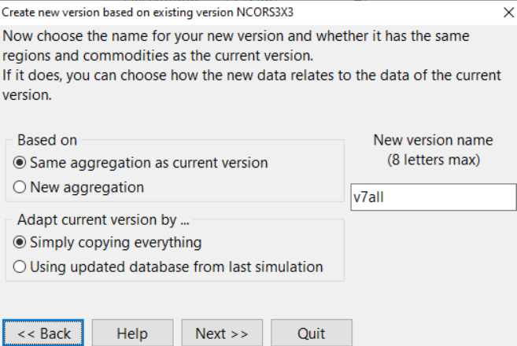
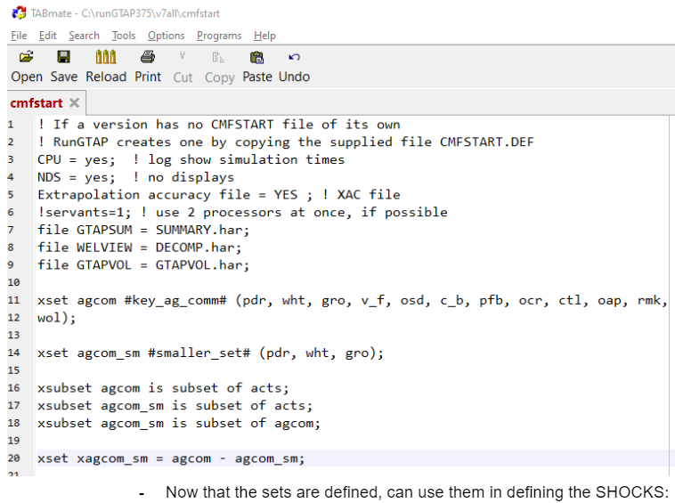
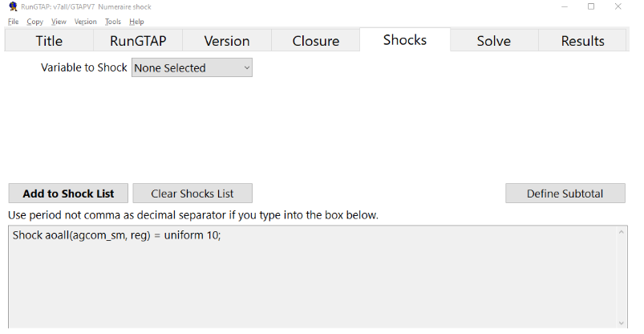

Running GTAP by hand
GTAPpy generates CMF files and calls GEMPACK so you do not have to do this manually. It is still worth doing once. The manual route is where the model version directory comes from in the first place, it is the fastest way to check that a new database or a new shock is sane before wiring it into a task tree, and when a GTAPpy run fails it fails at one of the steps below.
Getting a v7 version directory
RunGTAP organises work into versions — a directory holding model code, data, shock files and experiment definitions. What we want is a v7 version containing our own aggregated database rather than the toy one RunGTAP ships with. The quickest way to get one is, somewhat inelegantly, to have RunGTAP build it and then swap the data underneath:
Under Version → Change, select
NCORS3x3— the shipped 3×3 v7 version.Under Version → New, run the wizard with Same aggregation as current version and Simply copying everything, naming the result
v7all(RunGTAP version names are capped at 8 characters):
Creating v7all from NCORS3x3 by straight copy This creates
c:\runGTAP375\v7all. Now replace the data files in it with the fully disaggregated database produced in Building an aggregated database — the contents of thegtapv7directory, not the outer zip.
Rebuilding the shock files
The new version also inherits .shk files from the 3×3 original (tinc.shk and friends). Those are dimensioned for the old aggregation and are wrong for the database you just dropped in.
Tools → Run Test Simulation rewrites them to match the current aggregation. This is also the full end-to-end test that the version works at all — if the database, sets and model code are inconsistent, this is where you find out.
To confirm it worked, look at Results → Macros, or open the solution in ViewSOL via View → Results Using ViewSOL. The distinction matters: RunGTAP’s own results view shows only the subset of variables in its mapping, whereas ViewSOL loads the whole .sl4 file. Checking pgdp is a quick tell — under the default test shock, prices come out up about 10%. From ViewSOL, File → open in ViewHAR gives more still, including dimensional sorting.
Defining sets
A non-trivial shock usually needs sets the base model does not define — you rarely want to shock all commodities, you want to shock the agricultural ones.
Sets live in the CMFSTART file, which is the version’s runtime configuration: it sets solver options and names the files to use, and it is where the closure’s sets get defined. Reach it through RunGTAP → View → Sets, enable advanced editing, then Sets → View Set Library.
Clicking COMM and copying its elements in TABLO format gives you the full commodity set as text, which you then pare down to the ones you want:

The pattern in that file is worth reading carefully, because it is exactly what GTAPpy emits programmatically:
xset agcom #key_ag_comm# (pdr, wht, gro, v_f, osd, c_b, pfb, ocr, ctl, oap, rmk, wol);
xset agcom_sm #smaller_set# (pdr, wht, gro);
xsubset agcom is subset of acts;
xsubset agcom_sm is subset of acts;
xsubset agcom_sm is subset of agcom;
xset xagcom_sm = agcom - agcom_sm;Three things are going on. xset declares a set by listing its elements. xsubset asserts containment, which GEMPACK checks and which is what lets the set be used where a subset of ACTS or COMM is expected — omit these and the solve fails with a set-mismatch error rather than a helpful message. And the last line defines the complement, xagcom_sm, by set subtraction: having the complement available is what lets you shock one group while holding the rest fixed, or apply opposite shocks to the two halves.
Here agcom is the full agricultural commodity list and agcom_sm a three-element subset used for quick tests.
Defining and running shocks
With the sets defined, the Shocks tab takes shock statements over them:

Shock aoall(agcom_sm, reg) = uniform 10;Then set the solution method to Gragg 2-4-6, save the experiment, and solve.
From Tom: if Gragg does not work, use Euler with many steps — 20 to 50. It is slower but far more forgiving of a badly behaved database.
Kinds of shocks
The shock statement above is the simplest of several forms:
Uniform. One value applied across the whole set:
Shock aoall(agcom_sm, reg) = uniform 20;From file. Values read per element, which is how any spatially or sectorally heterogeneous scenario is applied — a yield shock from a SEALS run, a population path, a GDP trajectory. Zero means no shock, so the file covers the full set:
Shock pop(REG) = SELECT FROM FILE <filename> HEADER "<4-letter header>";Anything in the exogenous list can be shocked this way.
Swap. Exchange an exogenous variable for an endogenous one, which changes what the model is solving for rather than perturbing it. Swapping aoreg with GDP lets you drive the model with a GDP path and back out the productivity that implies — the standard move for calibrating to an exogenous growth scenario.
Parameter replacement — not a shock. Elasticities live in gtapparm, so changing one means writing a new .prm file. This is an input change, not a perturbation, and the difference has a real consequence: with a new base database and its matching .prm and no shock, the model reproduces that database exactly. A supply-response elasticity (as in the PNAS work) is the exception — that one does change the outcome.
The command-line chain
For production, RunGTAP is replaced by a sequence of batch files. This is the sequence GTAPpy automates, and the names are worth knowing because they appear in logs:
testsim.bat— the test simulation, as above, run first.rungtapv7.bat— the actual simulations.simresults.bat— post-processing. It takes the.sl4solution files, converts each to a.solHAR file, combines them into one file, and splits that to CSV.
Two levels of aggregation come out of the post-processing: RMAC is full dimension, RMCA is aggregated according to the chosen reporting simplification. AggMap.har defines that reporting aggregation; Allres.cmf runs it, calling allres.tab to clean the results.
Adding a new scenario therefore means touching more than the shock file: allres.tab needs the new scenario added at the top, and Allres.EXP — along with the per-scenario .EXP files — needs the correct exogenous variables listed (e.g. tpdall). Forgetting the .EXP side is a common cause of a scenario that runs but produces nothing in the summary tables.
Composite tax shocks
One idiom worth recording, from working through import taxes with Erwin. A tax applied to both domestic and imported goods needs an added equation that makes the components sum:
E_tpm (all, c, COMM)(all, r, REG) tmp(c, r) = tpmall + tpreg + tpall;And mind the distinction between shocking a rate and shocking a power: “the beef tax rate increases 50%” is not the same statement as “the power of the tariff increases 50%”, and the two give materially different answers.